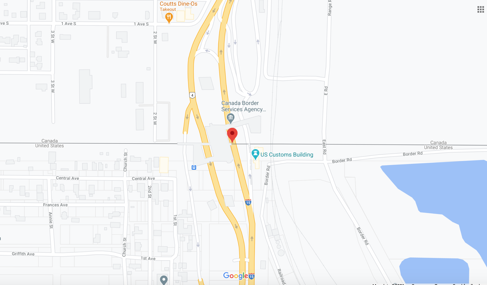

| Interaction Designer | Alexey Opokin |
|---|---|
| Visual Designer | Georgios Koultouridis |
| PM | Joost Pennings |
| ENG. Owner | TBD |
Border crossing is not an Instruction technically - it is a informative message informing driver about the fact of crossing country borders.
Border crossing manoeuvre point is placed at the crossing country border point.
EXAMPLE: Location URL

| EARLY | MAIN | CONFIRMATION | |
|---|---|---|---|
| NIP | |
|
|
| Audio | In 3.5km you will enter USA. | In 1km you will enter USA. | You are entering USA. |
| Audio extension | After crossing the border speed limits and distances will change from meters/kilometres to feet/miles. 1 mile is 1.6 kilometres. 3 feet is a meter. | - | - |
NOTE: In many cases current road, even if not interrupted, will change its name after border crossing. It this case new road name should be indicated in the NIP (I-15 in the example above).
NOTE: Country flag of entering country is displayed instead of Instruction arrow. For some areas country identity is not agreed between parties. In such places we should provide more generic information, avoiding country flag and country name. There will be generic icon provided for this case.
NOTE: Audio instructions for Border crossing differ between different phases. This is an exception from the rule for all other instructions.
NOTE: Audio extension should be announced once at Early or Main instruction phase - depending on the first available.
NOTE: Border crossing is not only represented as an instruction in the NIP, it also appears as an event in HP. Once there is no more instructions between BC and current position, the event is replaced by the NIP instruction.